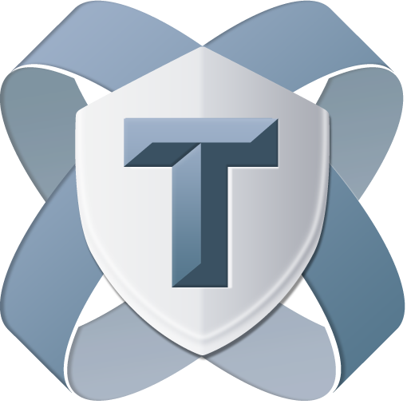
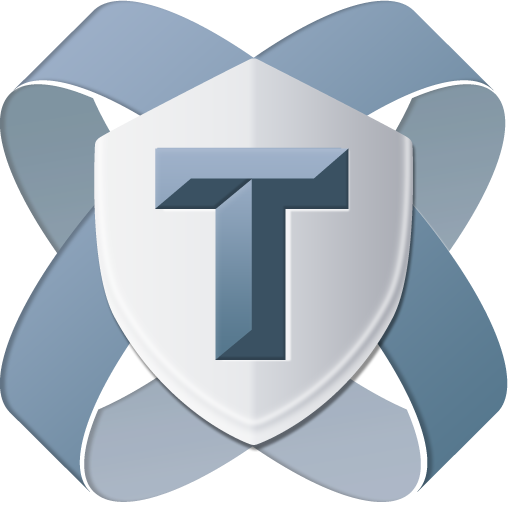

Hello Titanium
타이타늄 시작하기
rev.201402
이종은
인디 개발자
- TiDev.kr(한국 타이타늄 사용자 모임) 운영
- Titanium Certified Expert
- Titan

 

여러분은?
- 이름,
- 수업을 통해 알고 싶은 것,
- 만들려고 하는 앱,
- 하고 싶은 말 (아무거나^^)
강좌 내용
첫째날 - 타이타늄의 이해
- Javascript 이해
- Titanium UI & Alloy View
- Titanium UI & Alloy Controller
- Cross Platform
- Widget과 Module 사용하기
강좌 내용
둘째날 - 앱 제작 실습
- Alloy Model (MVC의 이해)
- BaaS란?
- App - 회원가입/로그인
- App - 글목록
- App - 글작성
- App - 사진 업로드 or 댓글 작성
Titanium 동작 방식의 이해
기본편
keynote로 진행 - 16~22page
Slideshare 버전 보기1Javascript의 이해
비교 연산자 == vs ===
var one= 1, oneString = '1' , t = true;
console.log(one == oneString);
console.log(one == t);
console.log(oneString == t);
console.log(one === oneString);
console.log(one === t);
console.log(oneString === t);원시값의 복사
var p = 1;
var copyOfP = p;
p = 3;
console.log(copyOfP);
var myObject = {};
var copyOfMyObject = myObject;
myObject.foo = 'bar';
console.log(copyOfMyObject.foo);원시값의 비교
var p1 = 10;
var p2 = 10;
var p3 = new Number('10');
var p3_1 = Number('10');
var p4 = p3;
console.log(p1 === p2);
console.log(p1 === p3);
console.log(p3_1 === p3);
console.log(p1 === p3_1);
p4=10;
console.log(p4 === p3);복합 객체의 비교
var objectFoo = { smae : 'same' };
var objectBar = { smae : 'same' };
console.log( objectFoo === objectBar );
var objectA = { name : 'name' };
var objectB = objectA;
console.log( objectA === objectB );객체 속성 접근방법
- object['property_name']
- object.property_name
var obj = {
name : 'MyObject'
};
var a = 'name';
console.log(obj.name);
console.log(obj["name"]);
console.log(obj[a]);함수는 1급 클래스이다.
변수, 배열, 객체에 저장될 수 있다는 뜻이다. 또한 함수에 전달될 수도 있고 함수에서 반환될 수도 있다. 그리고 함수는 객체이기 때문에 속성도 가지고 있다.
- "자바스크립트를 깨우치다" 중에서
var myFun = function(){
console.log('MyFun');
};
var yourFun = function(fn){
fn();
return function(){
console.log('return Fun');
}
};
var retFun = yourFun(myFun);
retFun();this
function fn(){
console.log(this);
}
fn();
new fn();arguments
var myFun = function(){
console.log(arguments[0]);
console.log(arguments.length);
console.log(arguments.join);
console.log(arguments.callee);
console.log([].join);
};
myFun(1,2,'333','Ti');
Hoisting
함수 선언문 먼저 해석하고 Excuete context에 추가
foo();
function foo() {
console.log('I am NOT Android');
}클로저
var z = "global";
function outerFn() {
var z = "local";
function innerFn()
{
alert(z);
}
innerFn();
}
outerFn();Tip
var a = (isTrue == true)? 'This is true':'This is false';var a = b || {}var a = callback && callback();Titanium 설정 하셨나요?
https://github.com/yomybaby/TiStudy/blob/master/SETTING_GUIDE.md- Titanium Studio / SDK 버전
- Dashboard 설정 상태
- ti cli, tishadow, gittio 버전
- git 명령어
잠깐! 타이타늄 환경 설정 점검
- Ti Studio에서 프로젝트 생성
- 실습용 github 저장소 설정하기
- tishadow 확인하기
ti config genymotion.enabled true
genymotion emulator를 titanium에서 사용하려면 한번 실행!
ts express
ti cli에서 --shadow 옶션이 가능하도록 hook 설치
실습 준비
- Titanium Studio에서 'myHelloTi' 프로젝트 생성
- 터미널에서 workspace 폴더로 이동
- git clone https://github.com/yomybaby/HelloTi.git
- myHelloTi폴더에서 tiapp.xml 과 menifest 파일을 HelloTi로 복사
- myHelloTi 삭제
- helloTi 폴더명을 myHelloTi로 변경
- cd myHelloTi
- git checkout v.start --force
- (ios) ti build -p ios --tishadow
(android) ti build -p android --device-id "Galaxy Nexus - 4.1.1 - with Google Apps - API 16 - 720x1280" --shadow
iOS, Android 동시에 확인하려면
- ti build -p ios --tishadow
- ti build -p android --device-id "Galaxy Nexus - 4.1.1 - with Google Apps - API 16 - 720x1280" --shadow
- ts server
- ts @ run -u
- app 재실행
준비완료!
이제부터 Titanium 시작입니다.
2. Titanium UI 요소
- View
- Window
- Control
View
다른 view나 컨트롤을 포함하고 있는 컨테이너, html의 div와 유사함. 뒤에 View로 끝남
View, ScrollableView, ListView, TableView, WebView..var view = Ti.UI.createView({
backgroundColor : 'red'
});
var button = Ti.UI.createButton({
title : 'Hello Ti'
});
view.add(button);
alert('View!');to Alloy View
var view = Ti.UI.createView({
backgroundColor : 'red'
});
var button = Ti.UI.createButton({
title : 'Hello Ti'
});
view.add(button);
alert('View!');<View>
<Button>Hello Ti</Button>
</View>Window
Top level 컨테이너. 화면에 보여주기위해 최소한 1개의 윈도우가 있어야 함. View를 상속받음.
var win = Ti.UI.createWindow();
var view = Ti.UI.createView({
backgroundColor : '#e74c3c'
});
var button = Ti.UI.createButton({
title : 'Hello Ti'
});
view.add(button);
win.add(view);
win.open();
to Alloy View
var win = Ti.UI.createWindow();
var view = Ti.UI.createView({
backgroundColor : '#e74c3c'
});
var button = Ti.UI.createButton({
title : 'Hello Ti'
});
view.add(button);
win.add(view);
win.open();<Window>
<View>
<Button>Hello Ti</Button>
</View>
</Window>
Control
시각적 요소, 특정 기능/속성을 가지고 있음. View를 상속받음.
slider, button, label, switch..3. Titanium UI - Alloy 중심으로 실습
- Allo MVC Framework란?
- View (.xml)
- Style (.tss)
- controller (.js)
크기 지정
Ti.UI.SIZE, Ti.UI.FILL
Buttons, labels, images, text fields and areas
= Ti.UI.SIZE
Windows, views, tables, webviews
= Ti.UI.FILL
Table rows
= width는 FILL하고 height은 SIZE에 맞게
단위
px, mm, cm, in, dp, dip, or system
tiapp.xml 에 기본 설정 지정
<property name="ti.ui.defaultunit">system</property>
위치 잡기
left, top, right, bottom
이 속성들은 크기와도 관련이 있다?
레이아웃 모드
vertical, horizontal, absolute
- horizontalWrap 속성
sibiling 간의 순서
- 기본동작
- zIndex 지정ㄹ
Event 다루기
- UI 컨트롤(proxy)의 이벤트
- Alloy Controller의 이벤트
- Ti.App의 이벤트
Android와 iOS 따로 대응하기
파일로 구분
- image : native와 동일
- folder로 구분
- Alloy Controller 구분자
- Alloy Style 및 View에서 platform 속성
Alloy Widget과 Module
- Alloy Widget -alloylove.com
- Titanium Moduel -marketplace.appcelerator.com
종류가 많아서 좋지만 설정이 번거럽네요.ㅠ
gitt.io- Alloy Widget과 Module을 한방
- Widget 실습 - toasty
오늘은 개념 잡는 날
궁금하신 점?
내일은 앱 만드는 날
Thanks
내일 만나요~
링크 모음
Bacbkone 0.9.2 문서ACS my Apps 목록 보기
ACS Adapter